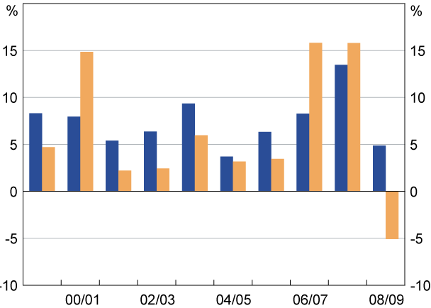

FINT is personal banking software with a difference.
FINT is designed for people who financially manage by having a vague idea of personal account balances.
We use a uniquely secure approach to importing your financial data
Intelligent tools make categorising transactions a breeze so you can get on with looking at the big picture.
Where do you spend and recieve money? What do your income and expenses and net worth look like over time? Anything funny going on?
There is no other software that securely provides financial intelligence for so little work.
FINT is still in development. If you would like to be informed about upcoming releases drop us a line
Features
FINT
Securely extends your online banking website to help download your finances.
Integrates with many banks to unify your financial information.
Can categorise most of your transactions automatically and learns rules to deal with your transactions in future.
Gives the flexibility to split your transactions across categories.
Helps you to understand your cash flows with vibrant visuals.
Provides planning assistance with budget suggestions and calendar planning for recurring expenses and budgets.
Prevents fraud by informing about transactions that don't fit your patterns.
Is designed to fit the needs of personal users and micro businesses.
Allows you to access your financial information from all your computers,tablets and phones.
Draws intelligence from the crowd to improve import and categorisation
Uses HTML5 technology to
deliver a fast smooth user experience without network delays,
store your information securely on your computer,
create beautify interactive visuals to help you understand.
Safe and Automatic
FINT is a basic bookkeeping application. Accounts and transactions can be entered manually or imported from a file. However the quickest way to get going is to import your financial data
directly from your electronic banking site.
Other software providing a direct import service requires that you share your Internet banking details with a third party so they can download and provide intelligence on your financial health. A bank is not going to be sympathetic to financial loss if it resulted from handing over your Internet banking details.
FINT is different. It is designed as an extension of your web browser so that you only need to login to your bank in the same secure way that you always do. The FINT import process simply assists in navigating and and capturing your information onto your computer so you can get the most from it.
To simplify early releases of the software that allow us to make the most of latest technologies, FINT is only guaranteed to work with the Google Chrome web browser.Download Chrome
Improve the value of your information
To draw intelligence from your finance records you need to categorise each transaction.
FINT makes it easy to create rules so no work is required as transactions are imported and categorised automatically.
Transactions can be made to automatically split and categorise transactions.
Rules can be shared anonymously to the FINT crowd and used as resources for private rules
FINT can have you up and running in minutes looking at categorised reports of your most recent transactions.
GPLXMEDICALXCENTREX
to
Date
Amount
Comment
2012-04-17
$99.97
GPL MEDICAL CENTRE
2012-04-19
$52.98
COLES SUPERMARKETS
2012-04-21
$929.50
ING AUTO REPAIRS
2012-04-28
$300.00
PETER JAANSON REALTY PTY LTD

Just what you need to know, anywhere
FINT is personal accounting software with different goals to applications like Quickbooks and MYOB. We leave features like payroll or invoicing and focus on simplicity and relevance for personal banking and micro business.
The home screen gives account, budget and other summaries and lets you quickly drill into transaction details so one or two touches or clicks are enough.
Filter transactions and highlight problems easily and, by storing everything in a local database means search is lightning quick.
Our goal is to empower your financial decision making with the least possible effort. We aim to make the most popular finance software ever!
Internet Sharing and Privacy
FINT is designed to stand out as THE secure solution to aggregate your banking data.
The approach we take to aggregating data from banks is unique in leveraging the latest features of web browsers.
The same technology allows us to deliver analysis tools without sending your information to any website. Storing or sharing any information online is optional and requires explicit permission from the user.
As with other Internet applications is it possible to opt in to synchronise your records via our website and access your information anywhere.
Securely and accurately downloading your bank records
Modern computer networks make it easy to collate and filter a wealth of information. FINT collates your financial records from many institutions and draws from shared knowledge about changes to the online banking sites and merchant account names for import categorisation.
Access to financial information requires appropriate steps to ensure that access and control of the information remains secure.
Almost all banks offer some kind of access to accounts through a web browser. By using SSL encrypted web requests, strong password policy and aggressive monitoring, this form of access is widely considered acceptably secure.
The FINT software is unique in that it works under the umbrella of your bank authentication. We never access your banking authentication details.
The software simply assists in navigating and extracting information from the bank web site using your web browser. Rigorous validation ensures the integrity of your records.
Security of your locally stored information
Each time you open the FINT application you must enter a password. To enhance security, all personal information stored in local or cloud databases is encrypted as soon as you type it in.
Ensuring that our software cannot be compromised is a primary design goal. We utilise all the latest browser security technologies to keep your data locked up tight.
Finally, FINT is an open source project so anyone can have a look at what we do with your information and review our processes for keeping it safe.
About
FINT is developed by a small passionate team of open source web software enthusiasts.
The team love to know if anyone has great ideas for improvements. Contact us at